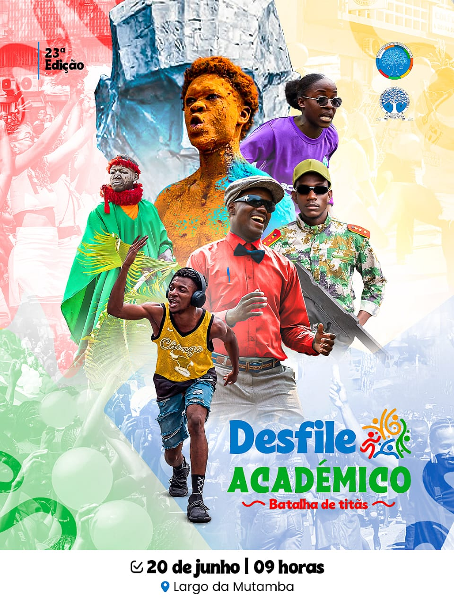
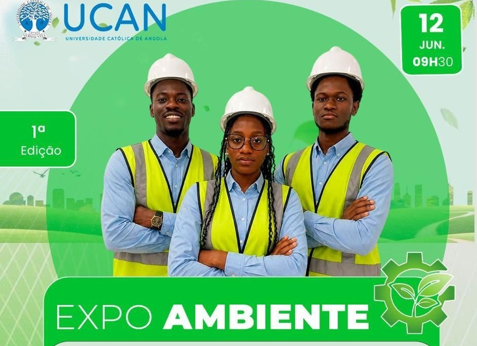
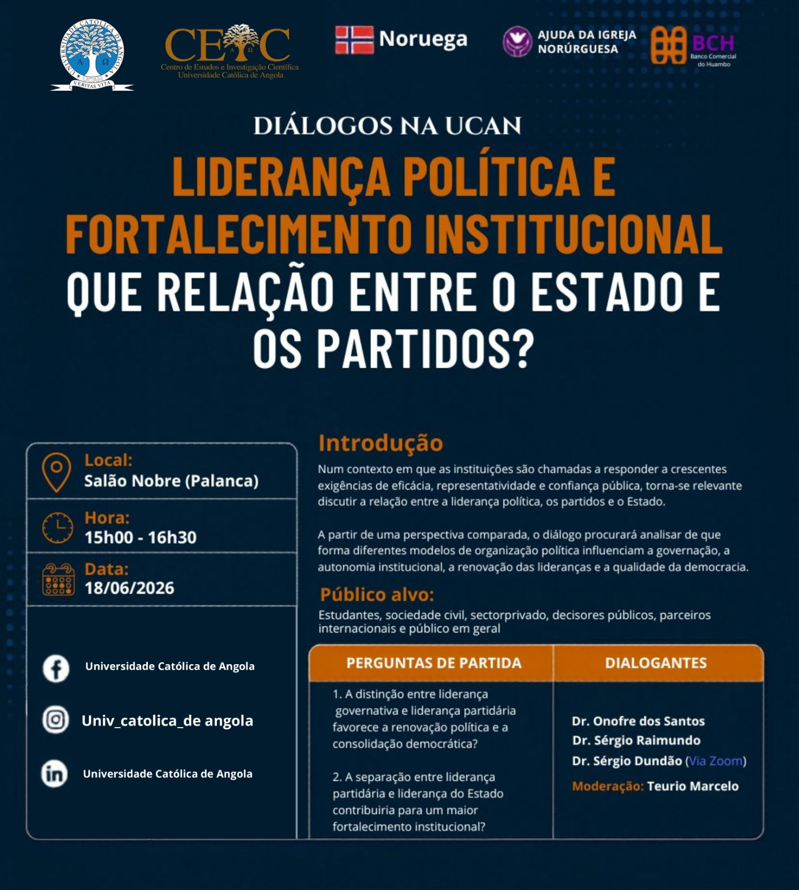

💻 Tecnologia
💻 Tecnologia
UCAN Fair Tech Feira de Tecnologias
Automação, Inteligência Artificial e Redes Autonómicas.
📅 13 a 15 Maio 2026 Ver Detalhes → 💼 Carreiras
💼 Carreiras
Feira de Empregabilidade da UCAN
A Feira de Empregabilidade da UCAN não é só um evento, é onde a preparação encontra oportunidades reais que mudam destinos. Empresas procuram talentos.
📅 27 a 28 de Maio 2026 Ver Detalhes →
🎭 Cultura🎭 DESFILE ACADÉMICO — 23ª EDIÇÃO
A tradição volta a ganhar vida nas ruas da cidade. No dia 20 de Junho, às 09 horas, o Largo da Mutamba será palco de um dos momentos mais emblemáticos da vivência académica: o Desfile Académico.
📅 20 de Junho 2026 Ver Detalhes →
🌍 AmbienteEXPO AMBIENTE - Iª EDIÇÃO | INSTITUTO DE RECURSOS MINERAIS, AMBIENTE E TECNOLOGIA DA UCAN
Alusivo ao Dia Mundial do Ambiente, os estudantes do 4.º Ano do curso de Engenharia do Ambiente e Território da Universidade Católica de Angola (UCAN), convidam todos os estudantes e o público em geral a participarem da Iª Edição da EXPO AMBIENTE. Sob o tema "Environmental Careers: O Papel do Engenheiro Ambiental no Mercado de Trabalho", o evento terá lugar no dia 12 de Junho do corrente ano, nas instalações da UCAN.
📅 12 de Junho 2026 Ver Detalhes →
🎓 AcadémicoDIÁLOGOS NA UCAN | CENTRO DE ESTUDOS E INVESTIGAÇÃO CIENTÍFICA (CEIC)
A Universidade Católica de Angola, através do Centro de Estudos e Investigação Científica (CEIC), promove a 4.ª edição dos Diálogos na UCAN subordinada ao tema: "Liderança Política e Fortalecimento Institucional: Que Relação entre o Estado e os Partidos?"
📅 18 de Junho de 2026 Ver Detalhes → 🎓 Cerimónia
🎓 Cerimónia
ENCERRAMENTO DO ANO ACADÉMICO 2025-2026
A Universidade Católica de Angola (UCAN) realiza a cerimónia de Encerramento do Ano Académico 2025/2026, um momento de profunda comunhão, gratidão e reconhecimento da excelência académica, científica, desportiva e humana da comunidade universitária.
📅 27 de Junho 2026 Ver Detalhes →